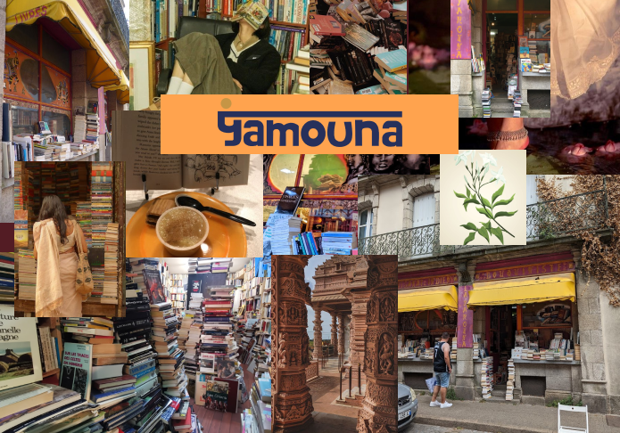

Projet Yamouna
Un peu plus sur le projet Yamouna...
Objectif :Créer un logo pour la marque de mon choix. J'ai décidé de choisir la librairie Yamouna, situé dans vannes. Je me suis inspiré de ses référence à l'inde, et j'ai crée la typographie et le logo sur Illustrator.
Ce logo est dans un style illustré, rappelant d'anciennes oeuvres et gravures indiennes du 18e siècle représentant des dieux. Chaques détail à sa place et son importance dans ce logo et renvoie vers des références.
Yamouna, est un nom signifiant "fleur de lys", orthographié différament cela peut rappeler le fleuve Yamuna en Inde. Ce logo se prend sa forme dans les traits du dieu Vishnu, le conservateur et le gardien des hommes, il protège l'ordre des choses.
Prenez le temps d'observer ce logo et il vous racontera peut-être son histoire...
Recherches et inspirations
(Cliquez sur l'image)

La création

J'ai créer un logo déclinable de différentes façons, ce que j'ai aimé c'est essayer de garder l'âme des dessin traditionnels indien tout en le rendant utilisable en tant que logo (pour plus d'infos : cliquer sur la section recherche et inspiration
Quelques mockups (totebag et carte de visite)